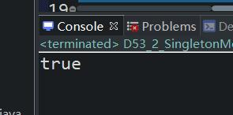

原文连接:https://www.cnblogs.com/ruigege0000/p/11932886.html
一、回顾
1.类和对象的区别
2.UML（uniform makeup language）
3.方法区存储静态变量、常量（static final修饰）
4.堆内存中存储对象
5.栈存储变量
6.this()可用于构造方法第一行
7.static静态语句块（JVM中第一次使用类的时候，会进行加载静态语句块），还可以修饰变量和方法
8.设计模式是可以重复利用的解决方案可以分为四类
9.类的继承（单继承）
10.方法覆盖（相同修饰符，相同方法名，相同参数）
11.多态，子类->父类（向上转型
父类->子类（向下转换，强制类型转换）
12.super关键字，子类里面访问父类的方法
13.super()可以出现在构造方法第一行，默认自动生成，不会创建父类，只是用来初始化，用来调用父类的构造方法。
14.final关键字
15.abstract抽象类
非抽象类调用抽象类，必须将抽象类中的方法覆盖、重写
二、深入final关键字
1.抽象类不可以被final关键字修饰（抽象类定义出来就是用来继承的）
2.fianl修饰的引用类型，该引用不可以再重新指向其他的java对象
但是final修饰的引用，该引用指向的对象的属性是可以修改的。
package com.bjpowernode.java_learning;
public class D53_1_FinalKeywordAddition {
public static void main(String[] args) {
final Customer53 c1 = new Customer53("Jack",45);
// c1 = new Customer53("liuming",45); //这个语句报错，这是因为final关键字修饰了c1这个变量
// 我们当然不能再将它进行赋值了，但是下面的对c1中的属性进行赋值就是可以的
c1.name = "jfaolj";
}
}
class Customer53 {
String name;
int age;
Customer53(String name,int age){
this.name = name;
this.age = age;
}
}
运行不会报错。
三、设计模式
1.设计模式：可以重复利用的解决方案
2.设计模式从结构 上可以分为三类：创建型、结构型、行为型
3.单例模式
（1）单例模式是23种设计模式中最简单的一种设计模式
（2）为了解决什么问题呢？
为了保证JVM中某一个类型的java对象永远只有一个；为了节省内存的开销
（3）实现单例模式的方法
i.构造方法私有化
ii.对外提供一个公开的静态的获取当前类型对象的方法
ii.对外提供一个当前类型的静态变量。
package com.bjpowernode.java_learning;
public class D53_2_SingletonMode {
public static void main(String[] args) {
Singleton53 s1 = Singleton53.getInstance();
Singleton53 s2 = Singleton53.getInstance();
System.out.println(s1==s2);//返回结果是true，说明这两个对象是同一个对象，这就达到了我们的目的
}
}
class Singleton53{
private static Singleton53 s;//这个很关键，因为静态变量是存储在方法区内存的，这里的s一旦被赋值了，就不会变了
//第二次调用这个类不会执行这段语句语句因为第一次调用类之前已经创建，第一次调用类改变了它，就一直不用变了
//将构造方法私有化
private Singleton53() {
}
//对外提供一个公开获取Singleton对象的方法
public static Singleton53 getInstance() {
if(s==null) {
s = new Singleton53();
}
return s;
}//这里必须是静态方法，如果是实例方法，我们对象都不能在外面创建，那么如果调用这个方法呢？
}
四、源码：
D53_1_FinalKeywordAddition.java
D53_2_SingletonMode.java
地址：
https://github.com/ruigege66/Java/blob/master/D53_1_FinalKeywordAddition.java
https://github.com/ruigege66/Java/blob/master/D53_2_SingletonMode.java
2.CSDN：https://blog.csdn.net/weixin_44630050（心悦君兮君不知-睿）
3.博客园：https://www.cnblogs.com/ruigege0000/
4.欢迎关注微信公众号：傅里叶变换，个人公众号，仅用于学习交流，后台回复”礼包“，获取大数据学习资料